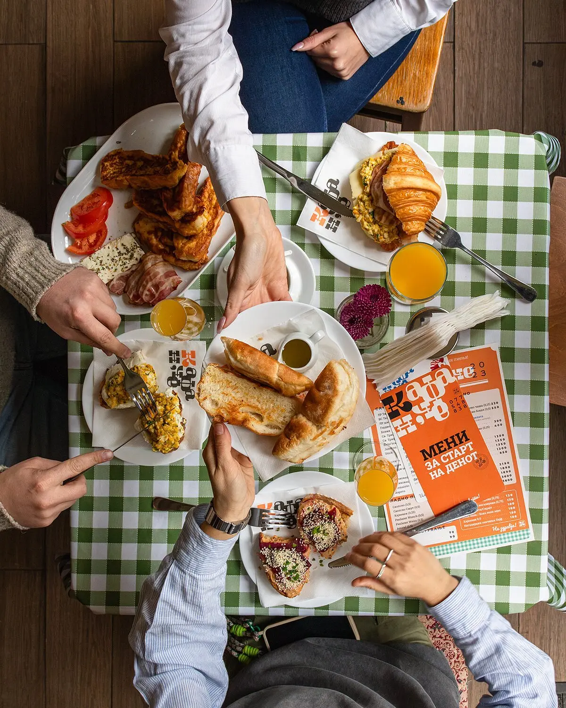
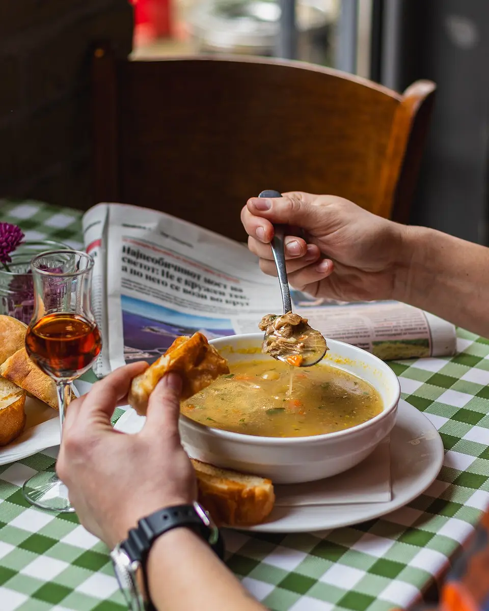
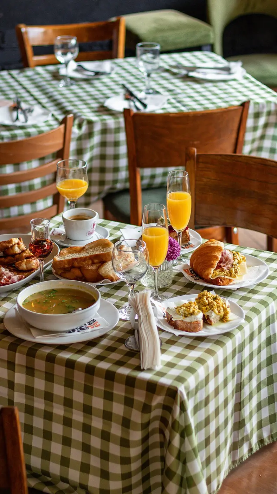
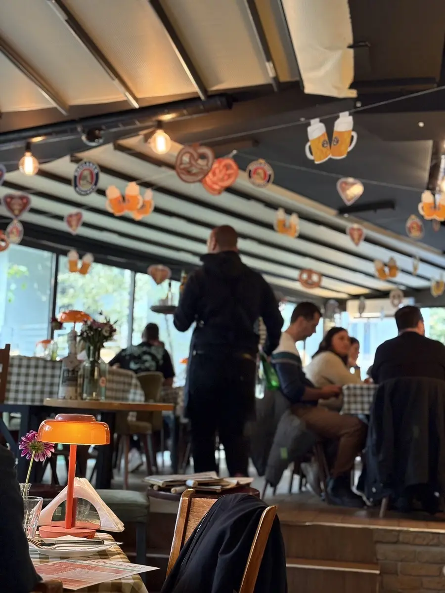

★★★★★
“Cosy and warm place, with very polite staff.”
Farmacija Nova Google
Едно ново, симпатично, лабаво кафанЧЕ. За појадок што се развлекува, ручек без брзање и мезе со уште една тура.

НАШЕТО КАФАНЧЕ
Готвиме со сезонски состојки и познати вкусови, ама без да бидеме предвидливи. Дојди гладен. Остани колку што ти е убаво.


“Cosy and warm place, with very polite staff.”
Farmacija Nova Google
“Delicious food and fair prices.”
Foodielover Google
“The wines were also local and excellent.”
Elizabeth M Google

ПОСЕТИ НÈ